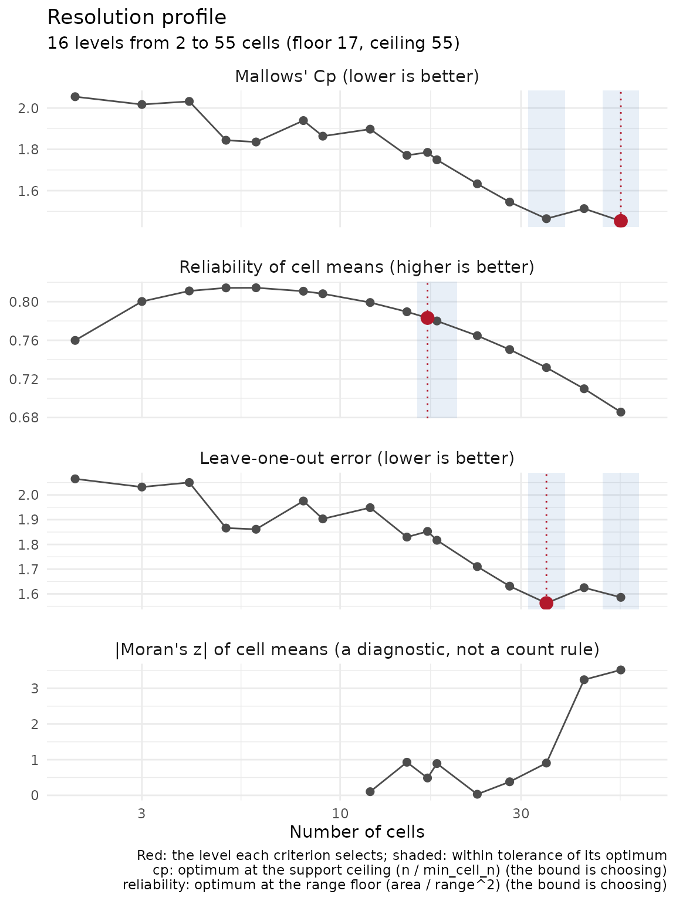

The number of cells sets what each cell value averages over. Too few
cells smooth away the variation you came to measure. Too many leave
cells that hold one observation each, where the standard error is
undefined and the cell mean is a single observation. The count also sets
the variance of the cell means, the design effect, and the size of the
blocks a spatial cross-validation holds out when it uses the cells as
blocks. resolution_profile() scores candidate counts and
select_resolution() reads one off the profile. Given the
response and nothing else, they choose the count for the pooled value that
summarize_by_cell() reports by default.
This article needs two optional packages: gstat for
the variogram and ggplot2 for the figure. Where one is
missing, the code that needs it is shown but not run.
The two calls with their defaults:
prof <- resolution_profile(pts, response_var = "z")
sel <- select_resolution(prof)determine_optimal_levels() reads a count off the
coordinates alone, and finds one only when the points cluster.
A field with known structure
The examples use a simulated field, so its structure is known before
anything is fitted. The 500 points are spread uniformly over a 1,000 m
square. The field has an exponential covariance with range parameter 100
m (exp(-d / 100)), so its correlation falls to 5 percent at
about 300 m, three times the range parameter, and
rnorm(n, sd = 1) adds a nugget: measurement noise that does
not depend on distance, here of variance 1.
A size for pooled values
By default summarize_by_cell() reports, beside each
cell’s mean, a pooled value: the cell’s mean pulled toward the mean of
the observations in the 8 nearest cells (nearest by the centroid of
their observations), by a weight that grows with the number of
observations the cell holds. estimate = "pooled" selects
it, and vignette("cells") shows how to read one. The count
for pooled values comes from a size,
obs_per_cell: the number of observations a cell is to hold
on average. A size s on n observations gives
max(2, round(n / s)) cells. The printed output counts
observations as rows.
The default profile is one size, 4.5, scored for the pooled value,
and select_resolution() reads the count off it by that
size:
prof_default <- resolution_profile(pts, response_var = "z")
select_resolution(prof_default)## Resolution by size: 111 cells
## size : 4.5 rows per cell, the default (obs_per_cell); 500 rows / 111 cells = 4.50
## cells : density-weighted k-means++ starts (power 1, 8 neighbours)
## estimate : pooled toward the 8 nearest cells
## at this size: 0.6% of the rows are alone in their cell; median own weight 0.57
## loo : 1.51 (one cell for the layer: 2.08)
## note : the count is set by obs_per_cell = 4.5, the default; no
## criterion chose it.The cells are density-weighted k-means cells: each point is weighted
by its local density. Density weighting gives cells of about equal
counts once there are more cells than clusters of points. At the default
size that holds on any layer whose clusters hold more than a few
observations, which is why the default size uses the density-weighted
partition (?resolution_profile, section “The partition”).
partition = "kmeans" gives plain k-means cells instead.
obs_per_cell also takes several sizes, one level each, with the centres fitted to
every row. estimate names the cell value the profile
scores, the pooled value unless it says otherwise:
sizes <- c(12, 9, 6, 4.5, 3)
prof_size <- resolution_profile(pts, response_var = "z", obs_per_cell = sizes)
as.data.frame(prof_size)[, c("levels", "scored_per_cell", "loo",
"share_alone", "own_weight")]## levels scored_per_cell loo share_alone own_weight
## 1 42 11.904762 1.517749 0.000 0.8344136
## 2 56 8.928571 1.528741 0.000 0.7578461
## 3 83 6.024096 1.513241 0.000 0.6627239
## 4 111 4.504505 1.505141 0.006 0.5746940
## 5 167 2.994012 1.436225 0.060 0.5727510Three of the columns say what a size leaves a cell value to stand on.
-
loois the leave-one-out error of the pooled value: each observation is predicted by the value of its cell computed without it, and the squared errors are averaged. It needs no variogram.sac = "auto", the default, fits none on a ladder of sizes, socpandreliabilityareNAin this profile;sac = NULLfits one and fills them. -
share_aloneis the share of the observations that are the only one in their cell. -
own_weightis the median weight a pooled value gives its cell’s own mean. At 1 the pooled values are the plain means; at 0 each is the mean of the cell’s neighbours.
At the default size this ladder has the same 111 cells, and the same
loo, as the default profile. Each level’s starts run on a
random stream of their own, seeded from seed and the level,
so a level gets the same centres on any ladder that holds it and is
fitted to the same rows.
select_resolution(criterion = "size") returns the level
of a size. It searches for no optimum, so the result has no flat region and sits on no bound.
Here it returns the default call’s count:
sel_size <- select_resolution(prof_size, criterion = "size",
obs_per_cell = 4.5)
sel_size$best## [1] 111loo shows what each size costs, but its minimum does not
pick a size. For pooled values loo tends to keep falling as
the cells shrink, so its minimum tends to be the finest size offered,
and the last level of the ladder would then set the count. On 200
simulated layers of 1,500 clustered observations of a field plus noise,
profiled at seven sizes from 18 to 2, the lowest loo of the
pooled value was at the size 2 on 176 of the 200 layers (dev/sim-pooled-values.R
in the package’s GitHub repository; ?resolution_profile
gives the settings). In the table above the lowest loo is
at 167 cells, the finest size offered. The size is therefore the
caller’s choice, made on other grounds: how many observations a cell
value should stand on, which share_alone and
own_weight describe.
In the table, at 12 observations per cell no observation sits alone in its cell and the median own weight is 0.83; at 3, 6 percent of the observations sit alone in their cell and it is 0.57. A larger size gives fewer cells, whose pooled values rest more on their own observations.
Under a size neither the cells, which are fitted to the coordinates, nor their number, which is a count of rows, depend on the response, so the count is not fitted to the values it will summarise.
A size does not ask whether the response has spatial structure the
cells can use, so the selection asks it separately.
structured is FALSE when one mean for the
whole layer predicts a left-out observation as well as the cells do or
better, within tol. It is also FALSE when an F
test of the cell means against one mean gives a p-value of 0.05 or more.
The count stands either way, since a size set it and no criterion, and
the functions that take the selection as a count then warn (class
spatialkit_no_structure) that the cell values will say
little that one mean does not.
data.frame(structured = sel_size$structured, loo = sel_size$loo,
one_mean = sel_size$loo_one_cell)## structured loo one_mean
## 1 TRUE 1.505141 2.081281The selection goes to get_voronoi_seeds(), as “From a
count to cells” shows. It carries a record of how the count was set,
sel_size$count_rule, which the seeds, the cells and the
assigned layer hand on to summarize_by_cell(). The summary
then checks that it reports the cell value the count was chosen for, on
the cells and rows that were scored.
Leave-one-out for plain means
With plain means the leave-one-out error does choose a count. Each
observation is predicted by the mean of the other observations of its
cell, or, when it is alone in its cell, by the mean of the cell of its
nearest other observation. estimate = "mean" scores that
error in the profile, and the default obs_per_cell = "auto"
then offers the seven sizes 18, 12, 9, 6, 4.5, 3 and 2.
estimate = "mean" in summarize_by_cell()
reports the plain means without the pooled columns.
prof_loo <- resolution_profile(pts, response_var = "z", estimate = "mean")
as.data.frame(prof_loo)[, c("levels", "scored_per_cell", "loo", "loo_se",
"share_alone")]## levels scored_per_cell loo loo_se share_alone
## 1 28 17.857143 1.645483 0.10176537 0.000
## 2 42 11.904762 1.544287 0.10013119 0.000
## 3 56 8.928571 1.569432 0.09566006 0.000
## 4 83 6.024096 1.614271 0.09915417 0.000
## 5 111 4.504505 1.767550 0.11377302 0.006
## 6 167 2.994012 1.718299 0.11056863 0.060
## 7 250 2.000000 1.883395 0.12165820 0.180
sel_loo <- select_resolution(prof_loo, criterion = "loo")
sel_loo## Resolution by loo: 42 cells
## flat region : 42 to 56 (2 of 7 levels)
## cells : density-weighted k-means++ starts (power 1, 8 neighbours)
## estimate : plain means
## at this size: 0.0% of the rows are alone in their cell
## loo : 1.54 (one cell for the layer: 2.08)The lowest error is at 42 cells, inside the sizes offered, so the criterion chose it.
sel_loo$flat is every level whose error is within
tol of the lowest, and it is the answer to quote, as for
any criterion. loo_se is the standard error of one level’s
mean squared error. It is not the standard error of the difference
between two levels, since their errors come from the same
observations.
The count now depends on the values of the response, so “Choosing on
one half, estimating on the other” below applies, and
select_on = "split" reads loo on one half of
the layer. The error describes locations among the observations: it
compares counts where data are near, and says nothing about the error of
a map away from them. It sets the count of plain means only; for pooled
values a size does. In the simulation described under “A size for pooled
values”, the lowest loo of the plain mean was at the finest
size on none of the 200 layers. It was at 6 observations per cell on 86
of them, at 4.5 on 51 and at 9 on 49.
criterion = "auto", the default of
select_resolution(), is the rule that goes with the
profile’s estimate: "size" for pooled values,
"loo" for plain means and "cp" for a profile
without an estimate. A profile built with estimate and
passed straight to get_voronoi_seeds() as n is
read the same way. Mallows’ Cp needs a variogram, which neither profile
of these two sections fitted.
A ladder of counts
n_levels asks resolution_profile() for a
ladder of cell counts in place of a size. The profile fits every level
and reports what each one costs, so you can see the shape of the
trade-off before picking a point on it. The levels are spaced
logarithmically, because cell diameter falls as L^{-1/2}, with L the number of cells. The cells are
density-weighted, as in the default profile, and the profile still
scores the pooled value’s loo at every level;
estimate = NULL leaves those columns out.
prof <- resolution_profile(pts, response_var = "z", n_levels = 16)
print(as.data.frame(prof)[, c("levels", "cell_n_median", "cell_diam_median",
"cp", "reliability", "loo", "moran_z")],
digits = 3)## levels cell_n_median cell_diam_median cp reliability loo moran_z
## 1 2 250.0 648.9 2.05 0.760 2.07 NA
## 2 3 164.0 484.8 2.02 0.800 2.03 NA
## 3 4 127.5 412.2 2.03 0.811 2.05 NA
## 4 5 101.0 374.9 1.84 0.814 1.87 NA
## 5 6 82.5 348.2 1.84 0.814 1.86 NA
## 6 8 65.0 281.0 1.94 0.811 1.98 NA
## 7 9 56.0 264.4 1.86 0.808 1.90 NA
## 8 12 41.5 226.5 1.90 0.799 1.95 -0.1028
## 9 15 32.0 199.4 1.77 0.790 1.83 0.9286
## 10 17 28.0 183.7 1.79 0.783 1.85 0.4871
## 11 18 27.5 176.8 1.75 0.780 1.82 0.8921
## 12 23 21.0 147.2 1.63 0.765 1.71 -0.0311
## 13 28 19.0 141.7 1.54 0.750 1.63 0.3802
## 14 35 14.0 124.1 1.46 0.732 1.56 0.9053
## 15 44 11.0 103.0 1.51 0.710 1.63 3.2407
## 16 55 9.0 93.3 1.45 0.686 1.59 3.5156One row per level. cell_n_median and
cell_diam_median say how many points a typical cell holds
and how big it is in CRS units, here metres.
cell_diam_median is twice the median root-mean-square
distance of a cell’s points from its centre, about 0.8 of the side of a
square cell of the same area. Compare it, with that factor in mind,
against something you know about your data, such as the spacing of a
sampling grid or the size of a field. print(prof) gives
every column, with a header that states the ladder, its bounds and the
variogram.
What the ladder can support
The ladder runs from 2 cells to a support ceiling the data impose. The profile records that ceiling and, beside it, a range floor from the autocorrelation range:
## List of 5
## $ floor : int 17
## $ ceiling : int 55
## $ ceiling_from: chr "min_cell_n"
## $ supported : logi TRUE
## $ range : num 243The ceiling is the smaller of floor(n / min_cell_n),
with n the rows that carry a response, and the most centres
k-means can place: the number of distinct locations, or one fewer than
the points when no location repeats. On a layer larger than
sample_n the fits run on a subsample and the ceiling is at
most half of it. ceiling_from names the bound that applied.
Past the ceiling the average cell holds too few points to estimate
anything from, or k-means has more centres to place than distinct
points.
The floor is ceiling(area / range^2), from the fitted
autocorrelation range. Cells wider than the range average over more than
one patch of the field, mixing values the field itself keeps apart. The
range is an estimate, so by default the floor is reported and not
applied: it is a level of the ladder,
select_resolution(criterion = "reliability") reads from it
up, and range_floor = TRUE starts the ladder there.
When the floor exceeds the ceiling, the data cannot support a
tessellation that respects their own correlation structure.
supported is FALSE, a warning says so, and the
ladder still runs from 2 to the ceiling so the cost of each level stays
visible. The usual causes are too few points for the extent, or an
autocorrelation range shorter than the spacing between observations.
Four criteria and a diagnostic
| criterion | measures | needs | direction |
|---|---|---|---|
elbow |
how far the log of the within-cluster sum of squares (WSS) of the
coordinates sags below a power law (the straight log-log line from one
cell to the last level); NA at every level when the points
have no cluster structure |
coordinates only | larger |
cp |
Mallows’ C_p of the piecewise-constant approximation of the response by cell means: the fit of the cell means, penalised for the number of cells | a response, and a variogram for the nugget | smaller |
moran_z |
Moran’s z of the cell means (of their regression residuals when predictors are given): whether neighbouring cells resemble each other | a response | none: a diagnostic, not a count rule |
reliability |
the share of the spread in the cell means that is signal rather than sampling noise | a variogram | larger |
loo |
the leave-one-out error of the cell value the profile scores, the pooled value by default | a response | smaller |
elbow sees the coordinates and knows nothing about what
you measured. cp and reliability split the
practical question in half: how well the cells represent the field, and
whether the cell values can be told apart from noise. What
cp estimates is the error of re-measuring the sampled
sites, each predicted by the mean of its cell, with the variogram’s
nugget as the noise of one measurement. For a new location the penalty
would also need the spread of the field inside a cell, which the nugget
leaves out. moran_z grows as the cells get finer than the
range, because neighbouring cells then resemble each other, and at the
coarsest counts where it is computed it is near zero whatever the data.
It does not say how well the cells represent the response, so
select_resolution() refuses it unless asked with
diagnostic = TRUE, and summary() on the
profile (?summary.resolution_profile) leaves it out unless
it is named.
plot(prof) draws the criteria against the number of
cells; ?plot.resolution_profile describes the panels.
plot(prof)
cp can stop inside the ladder only when there is a
nugget. On a smooth field the piecewise-constant approximation keeps
improving as cells shrink, the penalty is too small to stop it, and the
minimum lands wherever min_cell_n stops the ladder. The
support ceiling then does the choosing, and
select_resolution() flags it.
This fixture has a fitted nugget of 0.7 against a partial sill of
1.42, and cp still falls to the last level of the ladder:
its minimum is the support ceiling, as summary() says
below.
reliability is highest at a coarse count, because bigger
cells hold more points and average away more noise. Here its maximum is
at 6 cells, below the range floor of 17, where cells are wider than the
range. select_resolution() therefore reads it from the
floor up, and then returns the floor, a bound on the analysis that the
range sets.
Choosing, and the flat region
select_resolution() picks the level a criterion prefers
and reports the flat region around it. On a ladder of counts, name the
criterion. With none, select_resolution() applies the
profile’s default rule, 4.5 observations per cell for pooled values:
auto <- select_resolution(prof)## Warning: select_resolution(): obs_per_cell = 4.5 asks for 111 cells, which is
## not a level of this profile; the nearest level, 55 cells (9.09 rows per cell),
## is used. Build the profile with obs_per_cell = 4.5 to score that count.
auto$best## [1] 55That asks for 111 cells, which this ladder does not have, so the call
warns (class spatialkit_size_not_reached) and returns the
nearest level, 55.
sel <- select_resolution(prof, criterion = "reliability")
sel## Resolution by reliability: 17 cells
## flat region : 17 to 18 (2 of 16 levels)
## cells : density-weighted k-means++ starts (power 1, 8 neighbours)
## note : the optimum is the range floor (area / range^2); the bound is
## choosing, not the criterion. Fewer cells would be wider than
## the range and average over more than one patch of the field.sel$best is the optimum and sel$flat is
every level within tol of it. Quote the flat region when
you write the analysis up. tol (default 0.02) is relative
to the optimum’s value for cp, reliability and
loo, and relative to the criterion’s range for
elbow and moran_z, whose optima can be
zero.
Two flags say when a bound chose instead of the criterion:
c(at_floor = sel$at_floor, at_ceiling = sel$at_ceiling)## at_floor at_ceiling
## TRUE FALSEat_floor is TRUE here. The reliability
curve keeps rising toward coarser counts, and the floor from the
autocorrelation range stops it there, so 17 is the coarsest count the
range allows, set by the floor and not by the criterion; quote it as a
bound, not as the criterion’s choice. Changing tol will not
move it.
Criteria can prefer different levels and still share some.
summary() reads the count criteria side by side and closes
with the levels that every flat region contains:
summary(prof)## Resolution picks: 3 criteria over 16 levels (2 to 55 cells)
##
## cells: density-weighted k-means++ starts (power 1, 8 neighbours)
##
## criterion best flat region levels in flat region
## cp 55 35, 55 2
## reliability 17 17 to 18 2
## loo 35 35, 55 2
##
## cp: the optimum is the support ceiling (n / min_cell_n).
## reliability: the optimum is the range floor (area / range^2).
## There the bound is choosing, not the criterion.
##
## picks span 17 to 55 cells (3.2x)
## no level is in every flat region: the criteria disagree over the
## whole ladder. plot() draws the curves they were read from.A flat region is a set of levels and can skip some, because the
criterion curves are not monotone: the flat region of cp
above holds 35 and 55 and leaves out the 44 between them. A run of 2
adjacent levels prints as a range, as reliability does with
17 to 18. attr(summary(prof), "common")
returns the levels that every flat region contains, for use in code, and
attr(summary(prof), "bands") each criterion’s flat region
in full. Here no level is in every flat region, so no single count
satisfies every criterion, and you have to say which question your
analysis asks.
summary() reports each criterion’s best level and flat
region side by side and does not choose among them.
An elbow from the coordinates alone
determine_optimal_levels() reads the coordinates and no
response. It returns a few candidate cell counts, best first, when the
WSS curve of a k-means clustering of the points has an elbow, and
NA when it has none. The curve runs from 1 cell to
max_levels. On points drawn around six centres it finds the
elbow:
set.seed(1)
centre <- data.frame(x = runif(6, 100, 900), y = runif(6, 100, 900))
k <- sample(6, 300, replace = TRUE)
clus <- st_as_sf(data.frame(x = 5e5 + centre$x[k] + rnorm(300, sd = 25),
y = 5e6 + centre$y[k] + rnorm(300, sd = 25)),
coords = c("x", "y"), crs = 32632)
determine_optimal_levels(clus, max_levels = 40)## [1] 6 5 7
## attr(,"structured")
## [1] TRUE
## attr(,"sag")
## [1] 1.418144The fixture’s points are uniform, so their WSS falls like
c / k all the way down and bends nowhere:
lv <- determine_optimal_levels(pts, max_levels = 40)## Warning: determine_optimal_levels(): the WSS curve has no elbow: on log-log
## axes it falls in a straight line, as it does for points with no cluster
## structure. k = 7 is where the chord rule lands on such a curve, set by the
## ladder (k = 1 to 40, max_levels) rather than by the data. Choose the count on
## other grounds, e.g. resolution_profile() with a response. Returning NA
## (on_no_elbow = "na").
lv## [1] NA
## attr(,"structured")
## [1] FALSE
## attr(,"sag")
## [1] 0.001046518The call returns NA, with
structured = FALSE and the largest sag of the curve as
attributes, and the warning of class spatialkit_no_elbow
says why. on_no_elbow = "warn" returns the count the rule
lands on instead, with the same warning, which says that
max_levels chose it: a larger max_levels would
give a larger answer. On points like these, use the profile.
When there is an elbow, lv is what
get_voronoi_seeds() takes as n, and “From a
count to cells” below names the other arguments that take it. Given an
NA result itself, get_voronoi_seeds() and
build_tessellation() stop and say where it came from.
lv[1] drops the attributes that tell them, and they then
say only that NA is not a number of cells.
criterion = "morans_i" ranks the counts near the elbow
by Moran’s z of the cell means, a diagnostic.
criterion = "combined" keeps the elbow’s ranking of those
counts and reports Moran’s I beside it. Both need a
response_var, and ?determine_optimal_levels
covers them. The ladder of determine_optimal_levels() has
no floor from the autocorrelation range, so it can prefer cells wider
than the range. That is one reason it can disagree with
select_resolution(criterion = "reliability"), which reads
from the floor up.
Choosing on one half, estimating on the other
Picking the level from the same response you then aggregate is a form
of double-dipping: the cell count was chosen to suit one realisation of
the field. select_on = "split" profiles part of the layer
and hands back the row positions of both parts.
prof_split <- resolution_profile(pts, response_var = "z", n_levels = 16,
select_on = "split")
halves <- attr(prof_split, "split")
halves## Spatial half-split (block_kfold, seed 123): 251 selection rows, 249 estimation rows
## $selection and $estimation are row positions in the layer as passed.The split is spatially blocked, and records the method and seed that produced it. A random half would put neighbours of every selection point in the estimation set, and on an autocorrelated field that leaks the structure you are choosing against. Blocking reduces that leak without removing it: the two halves share a border, and points on either side of it within the autocorrelation range are still correlated.
Choose from prof_split, then aggregate the rows in
halves$estimation. The cells on the ladder are still drawn
on every point, so the count it picks is a count for the whole layer,
and the ladder is as long as the full profile’s. Only the steps that
read the response (the variogram, cp, moran_z,
loo) use the selection half. Those steps see half the data,
so the profile is noisier and its flat regions can be wider. The
estimation rows also fill only their own half of the layer. A cell
inside the selection half gets none of them, and a cell across the
border between the halves is estimated from the part of it on the
estimation side. Read standard errors only off cells whose points are
all estimation rows.
## List of 4
## $ floor : int 21
## $ ceiling : int 55
## $ n : int 500
## $ supported: logi TRUEThe floor can differ from the full profile’s, because it comes from the range estimated on the selection half.
From a count to cells
n in get_voronoi_seeds(),
approx_n_cells in build_tessellation() and
target_cells in create_grid_polygons() each
take a plain number or what determine_optimal_levels(),
resolution_profile() or select_resolution()
returns. Of the candidates determine_optimal_levels()
ranks, they use the first. build_tessellation() reads
approx_n_cells for its "hex" and
"square" methods.
For Voronoi cells, hand the select_resolution() result
to get_voronoi_seeds() as n. It returns the
centres of the partition the profile scored, and a k-means partition,
weighted or not, is the Voronoi partition of its centres, so the Voronoi
cells of those seeds are the cells the criteria judged. The bare count
sel$best would run a new k-means and give other cells. When
the selection sits on a bound, as this one does at the range floor, the
call warns that a bound chose the count (class
spatialkit_bound_chosen). build_tessellation()
then builds the cells on the seeds:
bnd <- clip_target_for(pts, expand = 0.02, quiet = TRUE)
seeds <- get_voronoi_seeds(boundary = bnd, method = "kmeans", n = sel,
sample_points = pts)## Warning: get_voronoi_seeds(): `n` is 17 cells, the optimum of `reliability`,
## and that optimum is the range floor (area / range^2): the bound chose the
## count, not the criterion. Fewer cells would be wider than the range and average
## over more than one patch of the field. Pass a number as `n` to set the count
## yourself.
cells <- build_tessellation(seeds, boundary = bnd, method = "voronoi",
quiet = TRUE)
nrow(cells$cells)## [1] 17A Voronoi tessellation grows one cell per seed, so its count is set
when you place the seeds. Passing approx_n_cells with
method = "voronoi" warns and is ignored, and without the
seeding step you get one cell per observation, a nearest-neighbour
interpolation of the points.
For a hex or square grid the selection goes to
build_tessellation() itself, which gives the same warning
on a bound, and the points go in directly:
hex <- build_tessellation(pts, boundary = bnd, method = "hex",
approx_n_cells = sel, quiet = TRUE)## Warning: build_tessellation(): `approx_n_cells` is 17 cells, the optimum of
## `reliability`, and that optimum is the range floor (area / range^2): the bound
## chose the count, not the criterion. Fewer cells would be wider than the range
## and average over more than one patch of the field. Pass a number as
## `approx_n_cells` to set the count yourself.
nrow(hex$cells)## [1] 27The hex grid has 27 cells for a request of 17. The target is adjusted
for hexagonal packing, and the hexagons the boundary cuts are kept as
cells, so approx_n_cells is approximate. The seeded Voronoi
tessellation has exactly the count asked for, because the seeds are the
cells.
Next
The next article in reading order is vignette("cells"),
which draws the cells, puts each observation in one and reports each
cell’s value with the right standard error. This article relied on
?resolution_profile, ?select_resolution,
?summary.resolution_profile,
?plot.resolution_profile,
?determine_optimal_levels, ?get_voronoi_seeds
and ?build_tessellation. ?resolution_profile
gives each criterion’s definition and its references, and
?determine_optimal_levels explains why its Moran’s I
criteria need more than nine cells. vignette("glossary")
defines the terms this article uses.